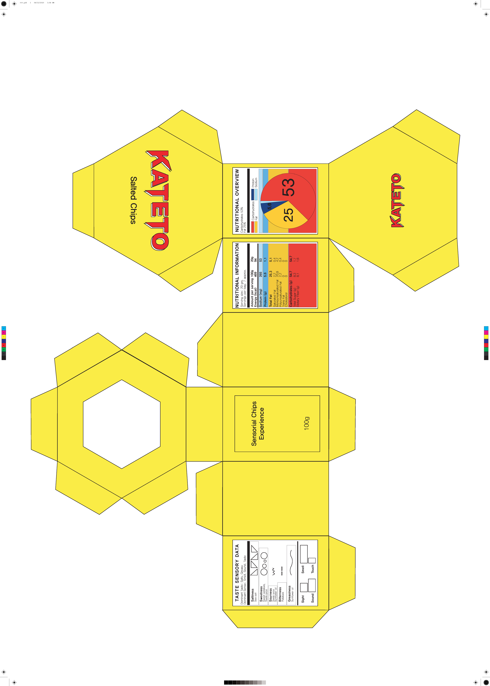
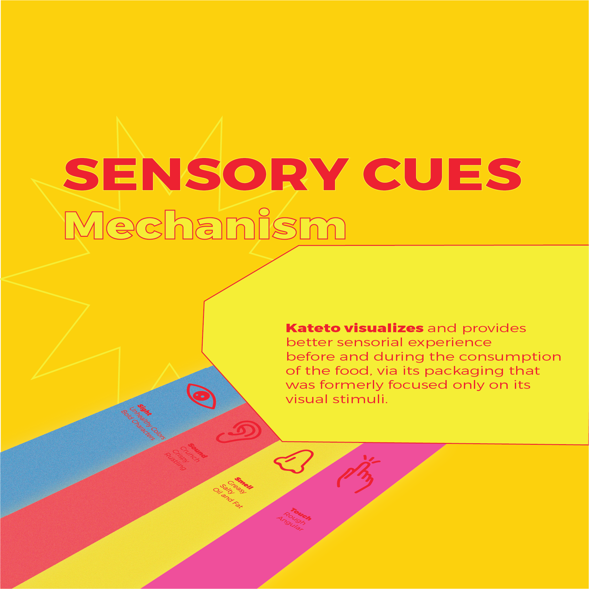
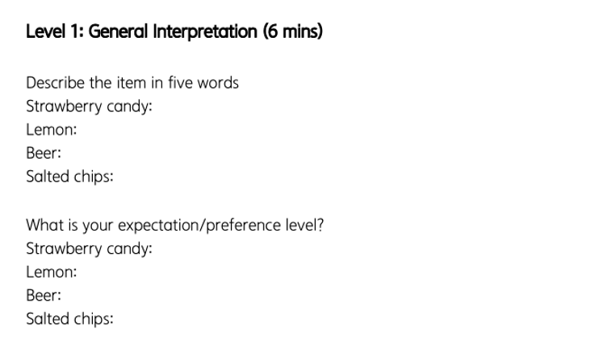
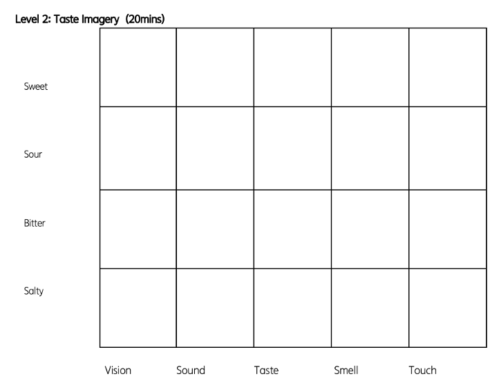
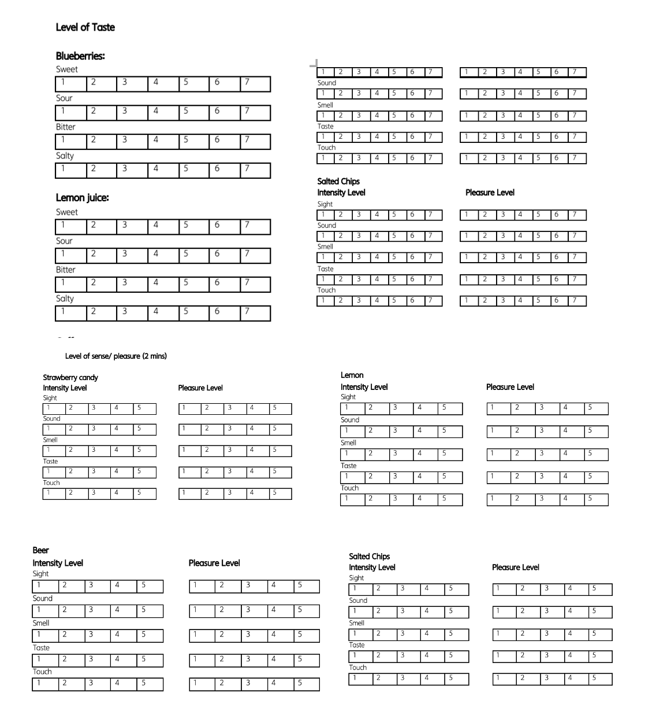
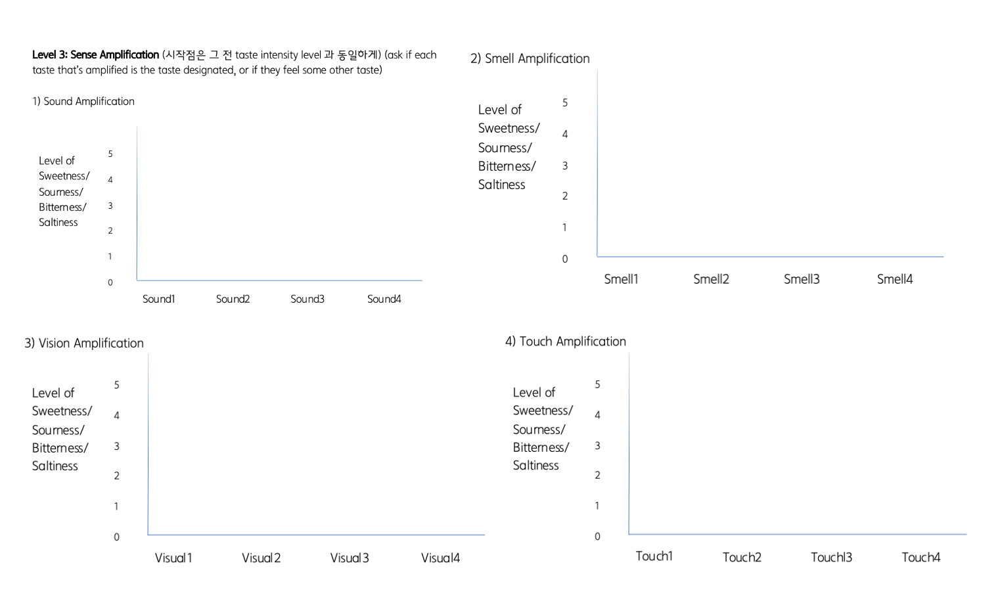
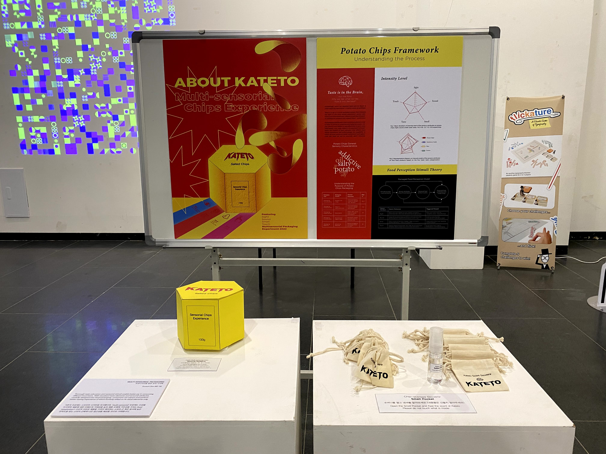

Information and Interaction Design Graduation Exhibition
Making a packaging prototype that portrays sensory attributes before tasting. In an attempt to visualize taste using packaging as the mediator, I tried to contribute to designing one's expectations toward foods.
Visualizing Taste
Universal method to explain taste
Unless we have physically met and tasted the food, it is beyond our capacity to fully understand what a new food would taste like.
For older adults, children, people speaking different languages, is there a way to universally portray the taste?

Packaging Design
Preliminary way of representing taste
We encounter countless products a day and before its physical usage all we
can rely on for information is its outer packaging. Meanwhile, it is proven that
thorough taste education and sensorial stimuli enable better joy in consuming different
food.
Packaging design to shape sensory expectations
In-depth research, sensory workshop, qualitative coding, data visualization, prototyping
“I actually thought it was an easy task, to describe the taste, but after doing this worksheet it feels... very abstract.
Drawing the invisible, I really thought I normally don't focus on my senses this deeply at all.
Our senses are complex.”
With visualized taste elements and sensorial attributes carefully designed in
to food packaging,
consumers can expect and perform better taste experience of which formerly focused
on its visual elements only.
Research Questions
There exists countless food, people had built their own experience and preference - throughout their entire life. People eat to live. But there is so much more than eating to survive in current culture.
1. Can you visualize taste?
2. When you visualize taste, does it only involve describing ’the taste’ itself?
3. Does amplifying other senses lead to changing taste perception?
4. Can being able to visualize the taste beforehand lead to changing perceived taste and overall food experience?
5. Would specific visualizing method help neophobia (people hesitant to try new foods) to try specific food more than a regular packaging would?
Flavor mechanisms
Literature review
In-depth interviews
Sensory workshop
Crafting worksheets
Sensory activities
Design implications
Sensory activities
Five participants workshop
Devise prototype for exhibition
Overview
Overview of the one of the food items, potato chip's, sensory workshop outcome

Sensory Workshop
Design methodology
Following items were selected as the exploration input variables: Strawberry candy, Lemon, Beer, and Salted chips.
The sensory exploration was conducted in a form of a creative workshop, as a means to understand the sensory
interactions emerging from each food item, the level of intensity and pleasure for each sensory
cue and which sensory attributes can amplify the hedonistic properties. Consequently,
the workshop consisted of three levels: the general interpretation and imagery,
levels of intensity and pleasure, and sense amplification. I have recruited five non design majors of Korea to participante.
General Interpretation

Following test is conducted to generate informative insights on people’s insights on certain food, without consuming it. Certain expectations, prejudice, judgements and biased level can be analyzed from here.
Taste Imagery

Following test is conducted to witness any trends on the ‘images’ that can be utilized in visualizing the taste and corresponding sensory factors that can well be visualized too.
Level of intensity/pleasure

Following tests are conducted to collect insights on what are the sensory cues that involve the most when eating certain food; if not taste, what is it and how can they be targeted and amplified in the future.
Sense amplication

Following test is designed to discover the maximized sensory ability to enhance one’s food experience. With the same item but with different sensory variables, the participant focuses on finding the best fitting experience for him or herself.
Results
Summary
Sensory Modalities
Strawberry candy
Lemon
Coffee
Salted chips
Sight
Smell
Strawberry odor
Strawberry odor
Burnt wood
Strawberry odor
Sound
Classical Harp
Classical Harp
Classical Harp
Staccato, violin
Touch
Warm, soft paper
Ice cold glass
Ice cold glass
None
Prototyping

Discussions
Congruency is the key.
Vision > touch > smell > taste > sound
Interactions between senses: color for the smell, sound for the feel
Based on the research congruent sounds, vision, smell represented apparent satisfaction levels.
However for the ‘negative’ tastes such as sour and bitter, participants preferred the stimuli that overcompensate the taste, rather than congruent stimuli.
Relationship with the Primitive Nature.
All of the five participants, when asked to draw and visualize different aspects of certain tastes, they based their thoughts starting from taste’s very origin.
One can assume that the pure form of basic taste comes directly from nature despite the abundant artificial taste enhancers
We often associate the color of the taste from the taste’s origin: salty=> sea salt=> sea => blue
Relationship with the Primitive Nature.
Witnessed the different elements clearly affecting and transforming one’s taste perception that can be further investigated to collect a detailed database
Witnessed a set of universal and repetitive visuals of perceived taste between participants that can be utilized in forming a taste idea or packaging design.
Selected the salted potato ships to have their packaging designed multi-sensorially. Implemented the results of its sensory modalities and observed interactions with the public.